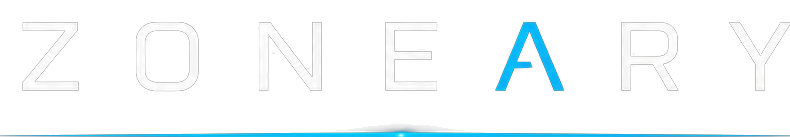
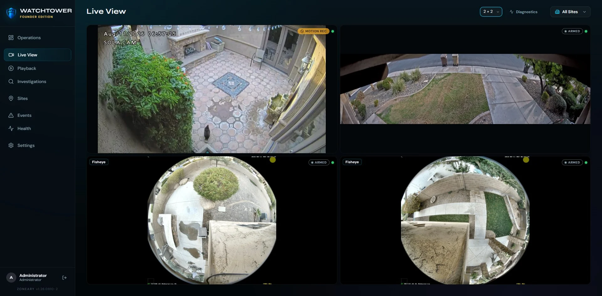
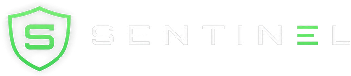
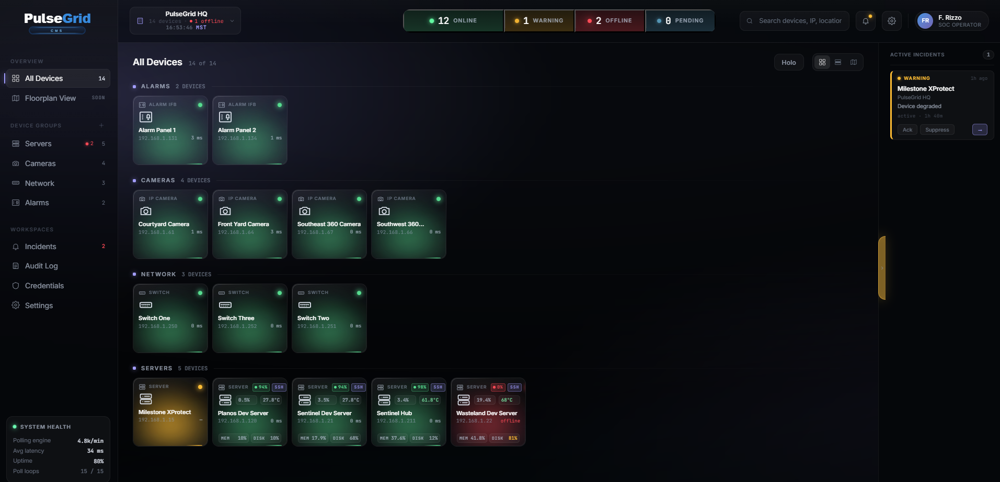
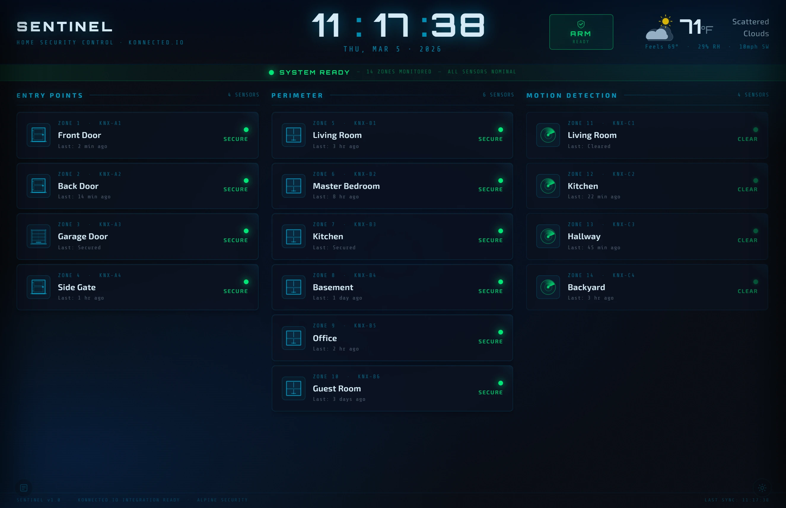

Watchtower Operations — the real product, running on real hardware.

Watchtower is Zoneary's local-first video management system — live monitoring, recording, playback and investigations, running on your own hardware, with your footage kept where it belongs: with you.
Zoneary creates local-first software for the systems that protect people, property, and operations. Our products bring video management, infrastructure health, and home security control together through modern interfaces designed for real-world security environments.
Live monitoring, video & audio recording, playback and investigations — designed for responsive multi-camera monitoring, honest about system state, and built to grow with the installation. Watchtower does not charge per camera. This is the heart of Zoneary; everything else exists to support it.

Multi-camera walls designed for responsive monitoring, and built to grow with the installation. Latency is a security flaw — Watchtower is designed to treat it like one.
Precise timeline navigation across recorded footage.
Recording timelineBookmark, tag and export clips to build an investigation.
Case exportRuns on your own hardware. Watchtower Community is free for up to four cameras; the Founder Edition removes those limits for a one-time price, with no per-camera licensing and no mandatory subscription. Core local operation does not require cloud video storage.
Free tier · one-time license · no per-camera feesOperations, live monitoring, recording, playback, investigations, health, camera compatibility and licensing — in depth, on the flagship's own page.
Something is always
watching over this place.
Each product solves one real problem in physical security — and together they form a single local-first ecosystem. Watchtower leads; PulseGrid and Sentinel complete the picture.
A modern, local-first video management system for live monitoring, video and audio recording, playback, investigations, and system health — running on your own hardware. Watchtower does not charge per camera.
Explore Watchtower
PulseGrid is being built to watch the infrastructure behind the video — cameras, servers, storage, networks, power and environmental conditions — so small problems surface before they become outages.

Sentinel is designed to bring compatible home security equipment — sensors, wiring and sirens — into one modern, local dashboard, with device awareness and event history. In active development.
PulseGrid and Sentinel are both in active development. What follows describes the direction and the capabilities being built and tested.
A server can answer every network check while its drive quietly fails and its services collapse. PulseGrid separates is it responding from is it actually well — so you catch trouble before darkness, not after.


The sensors, sirens and wiring you already have are often fine — it's the plastic keypad and the contract that feel stuck in the past. Sentinel is designed to bring compatible existing equipment into one modern, local dashboard, built for you instead of the installer.
Zoneary products are designed to run where your security operations live — no mandatory cloud dependency, no forced subscription model. Your operational data stays under your control. It's the direction behind everything we build.
We're a small team building the security software we always wished existed — tested against real cameras, real storage, real failures. Four beliefs sit underneath every screen.
Designed to keep working when the internet doesn't. Your footage lives on your hardware, and core local operation does not require cloud video storage.
Pay for value, not dependency. Zoneary licenses the system, not every device attached to it — Watchtower doesn’t meter cameras, Sentinel doesn’t meter sensors.
If a drive is failing, we show it. Detected recording gaps are surfaced, not buried. When we don't know, we say "unknown" rather than a comforting green.
Professional capability without institutional arrogance. Built for the small installation and the large one, on the same software.
Start with the flagship, or build out the full Zoneary ecosystem. Local, owned, and honest — the way it should have been all along.